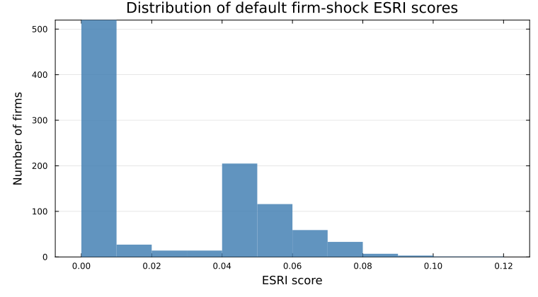

ESRIcascade.jl
ESRIcascade.jl computes firm-level economic systemic risk indicators from a firm-to-firm input-output network.
Installation
using Pkg
Pkg.add("ESRIcascade")Minimum Julia version: 1.12.
Quick start
using ESRIcascade, SparseArrays, Random
Random.seed!(42)
N = 1_000
W = sprand(N, N, 0.01)
W[1:N+1:end] .= 0
info = IndustryInfo(rand(1:4, N), [true, true, false, false]) # industry 1 and 2 are essential
econ = ESRIEconomy(W, info) # set up the economy
scores = esri(econ; maxiter = 40, tol = 1e-3) # compute ESRI for each firm
nothingW[i, j] is the nonnegative supply from supplier i to customer j.
The one-argument IndustryInfo(industry_of_firm) uses a purely linear production function. Pass a Boolean vector or an integer-code matrix such as Matrix{UInt8} to model essential inputs.

Most firms near zero indicate small economy-wide spillovers from most single-firm shocks. A longer right tail indicates larger losses from selected firm shocks.
Build ESRIEconomy once and reuse it on the same network.
See Performance for the submitted Julia/fastcascade runtime comparison and the benchmark scope.
Version 1.1 changes
IndustryInfo(industry_of_firm)adds an all-linear default classification.- An integer-code matrix can assign upstream propagation (
0), linear downstream propagation (1), or essential downstream propagation (2) to each supplier-customer industry pair.Matrix{UInt8}is the standard form. ihs_input_classification()andihs_industry_codes()provide the bundled IHS classification and its NACE Rev. 2 label order.- Custom
final_weightsare normalized bysum(final_weights)instead of total network output. This change can alter custom-weight scores from version 0.1.1.